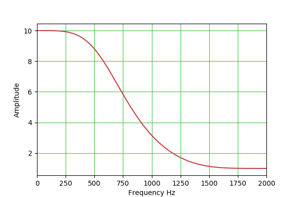

A rewritten Java/JavaScript biquadratic filter designer
Copyright © 2017, P. Lutus
Filter Type:
LowpassParameters:
Program BackgroundThe above is a JavaScript version of my BiQuadDesigner program — it's interactive and easy to use:
- Choose a Filter Type from the list at the left.
- Set Parameters for your filter including vertical and horizontal graph scale type (logarithmic or linear).
- Note that, when you change the sample rate or the center frequency, the center frequency for your filter is automatically limited to less than or equal to 1/2 of the sample rate if it has a higher value. This is consistent with the Nyquist-Shannon Sampling theorem, which in essence says that the meaningful bandwidth for a digital channel is limited to 1/2 the sample rate. A more useful value is 1/4 the sample rate, in the middle of the filter's usable bandwidth, but this is under the user's control.
- The filter constants list may appear to be missing one value: a0. But during filter calculations this value is eliminated (i.e. normalized to equal 1) for the sake of efficiency and operating speed (see the JavaScript source for details, and a more in-depth discussion of this issue below).
- Hover your pointing device over the chart to see specific x,y value pairs.
- Spin your mouse wheel over the numerical inputs to change their values in a fast and intuitive way.
- Many practical programs and code sources are described later in this article, all of which accept the parameter sets this application produces.
Version HistoryThe program at the top of this page can be used to explore the properties of biquadratic filters.This table outlines the properties of the available filter types:
Filter Type Q adj Gain adj Comments Image Bandpass Y N The most generally useful filter type. Low-pass Y N For low-pass and high-pass biquadratic filters, one normally sets Q = 0.707 ($\frac{1}{\sqrt{2}}$) to achieve a Butterworth filter transfer function with a 3 DB drop at the specified operating frequency. Higher Q settings produce an often-undesirable peak near the center frequency and dynamic instability in operation. High-pass Y N Peak Y Y This filter is a bit tricky to set up, because both Q and gain are effective. The idea is that one can use the gain control to set a nonzero base gain level that applies to all frequencies, then use the frequency and Q controls to set a narrow peak to exceed that level. Note also that, with a negative gain setting, the relation between the plateau and peak is reversed. Notch Y N This filter is more or less the opposite of the "Peak" filter — it creates a narrow rejection band, the width of which is set by the Q control. (But no plateau as with "Peak".) Lowshelf N Y Lowshelf and highshelf filters provide a sort of "plateau" effect, under control of the gain setting, and not unlike the "Peak" filter described above. Note that negative gain settings reverse the identity of the filter — lowshelf becomes highshelf and the reverse.  Highshelf N Y Here are some points about the JavaScript program:
- The numerical entry controls will accept numbers that are typed in, or (on most browsers) they can be controlled by your mouse — spin your mouse wheel over the numerical input controls to increment/decrement their values.
- The program's "Filter Constants" list shows the properties of the present filter. In typical practice, the data available there is not very important because normal biquadratic filter applications and classes include a way to create any desired filter constants on the fly during instantiation of the class. This means BiQuadDesigner is really meant to allow interactive exploration of biquadratic filters of various type and settings, rather than pin down a design's details.
- Notice that the vertical chart dimension can have a linear or decibel scale. The decibel scale is useful for comparing biquadratic filters to other filter types and to each other.
- Notice about the graph that hovering your pointing device over the graph produces a readout of x,y data pairs, with both linear and decibel values. This allows the user to establish details of the filter's properties.
- While using the program, remember the Nyquist-Shannon sampling theorem — the meaningful domain for filter design and modeling is between 0 Hz and 1/2 the sampling rate. In some cases this fact can be turned to the user's advantage — setting a low sampling rate may uncover a filter design that may be optimal for low-clock-rate environments.
References
- Version 1.6 10.23.2017. Updated the Java application's code to bring it into correspondence with the JavaScript version.
- Version 1.5 10.22.2017. Changed the decibel readout convention to 20 * log10 in all forms of the biquadratic filter, to be consistent with standard voltage/current measurement conventions.
- Version 1.4 10.21.2017. Fixed an error in the function that provides a static filter output for testing and display purposes.
- Version 1.3 10.21.2017. Extensively changed the Java application to better correspond with this JavaScript version and its features.
- Version 1.2 12.09.2013. Added explicit clipboard copy function and control (only works when operated as desktop application).
- Version 1.1 03.24.2011. Improved the mouse cursor readout to display simultaneous unit and decibel values.
- Version 1.0 03.23.2011. Initial public release.